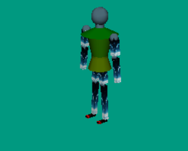
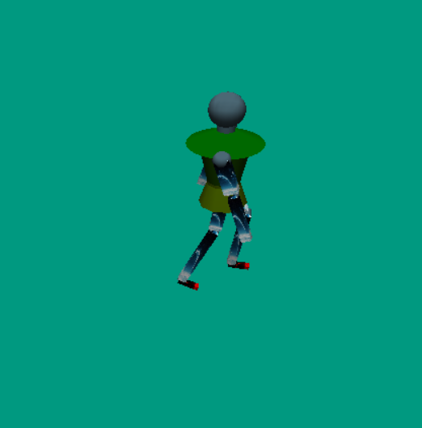
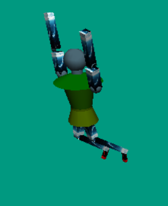
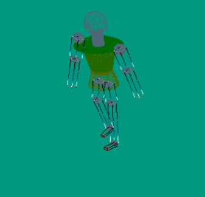

欢迎来到我的图形学实验二展示~
在第二个实验中，我们利用OpenGL来完成画一个简单的robot,在这个过程中体会光照模型和各种射影变换，并且可以选择性的对robot进行贴图美化。
在实现过程中，我先把robot画出来。画的时候头、肩膀、身体等部分要分开画，而且为了便于贴图，我把画正方体的方法进行了重写，这样可以指定坐标贴上图片。但是由于如果小人全部都用矩形 来画会比较难看，所以我还用了一些球形、圆柱等几何体来进行拼接，画出来的小人如图。

在画机器人的时候，设置每一个几何体的位置是，我同时会设置一个旋转函数，规定每一个几何体旋转的方向，而角度设置成变量，便于后来设置其运动，并且添加监听。在robot的运动函数中，我们将他的运动过程大致分为四个阶段，但是在每一个阶段处理起来需要做一些改动，比如因为小腿是跟随大腿摆动的所以大腿抬起来的时候，小腿需要朝着相反的方向变动。画出来以后走路的姿态如图。

接下来通过对键盘操作进行监听，并且完善一下重画和重定型函数，来设置重画的一些东西，使小机器人可以动起来。设置的时候注意一些细节，比如开启深度检测啊，开启光照啊等等，这样可以使得画出来的小人更加真实。通过操作对小人造型以及小人的结构如图所示。
 
源代码附在下边啦，供大家参考。
#include
#include
#include
#include
#include
#include
#define M_PI 3.141592653
#define COS(X) cos( (X) * 3.14159/180.0 )
#define SIN(X) sin( (X) * 3.14159/180.0 )
#define HEAD 1
#define SHOUDER 2
#define BODY 3
#define WAIST 4
#define UPLEG 5
#define LOWLEG 6
#define FOOT 7
#define UPARM 8
#define LOWARM 9
GLUquadricObj *qObj;//声明一个全局的二次曲面
static float lightpos[] = { 0.f, 200.f, 10.f, 1.f };
double turnbody = 0;
double elevation = 0;
int turnbodytemp;
int iswalk = 0;
static double v0, v1, v2;
static double a0, a1, a2;
struct {
float pos[2];
float dir[2];
}myrobot;
int mode = 0;
int ileg = 0;//在循环中控制左右
int iarm = 0;
double turnfront = 0;
double turnleft = 0;
double turnupward = 0;
//头，肩，腰。
double turnHead = 0;
double turnShouder = 0;
double turnWaist = 0;
//手臂。
double turnUpArmR = 0;
double turnMiddleArmR = 0;
double turnUpArmL = 0;
double turnMiddleArmL = 0;
//脚。
double turnUpLegR = 0;
double turnMiddleLegR = 0;
double turnFootR = 0;
double turnUpLegL = 0;
double turnMiddleLegL = 0;
double turnFootL = 0;
GLuint g_texture;//用于纹理贴图
char* trace[] = { "Texture.bmp", "Texture1.bmp" ,"Texture2.bmp" };
//Robot functions
void clear()//对各个参数进行清零
{
elevation = 0;
turnHead = 0;
turnShouder = 0;
turnWaist = 0;
//手臂。
turnUpArmR = 0;
turnMiddleArmR = 0;
//turnHandR = 0;
turnUpArmL = 0;
turnMiddleArmL = 0
;
//turnHandL = 0;
//脚。
turnUpLegR = 0;
turnMiddleLegR = 0;
turnFootR = 0;
turnUpLegL = 0;
turnMiddleLegL = 0;
turnFootL = 0;
}
void Box(GLfloat xdim, GLfloat ydim, GLfloat zdim)
{
glBindTexture(GL_TEXTURE_2D, g_texture);
glPushMatrix();
glBegin(GL_QUADS);
//正面。
glNormal3f(0.0f, 0.0f, 1.0f);//定义法向量
glTexCoord2f(0.0f, 0.0f);
glVertex3f(-xdim / 2.0f, -ydim / 2.0f, zdim / 2.0f);//3
glTexCoord2f(1.0f, 0.0f);
glVertex3f(xdim / 2.0f, -ydim / 2.0f, zdim / 2.0f);//2
glTexCoord2f(1.0f, 1.0f);
glVertex3f(xdim / 2.0f, ydim / 2.0f, zdim / 2.0f);//1
glTexCoord2f(0.0f, 1.0f);
glVertex3f(-xdim / 2.0f, ydim / 2.0f, zdim / 2.0f);//4
//后面。
glNormal3f(0.0f, 0.0f, -1.0f);
glTexCoord2f(0.0f, 0.0f);
glVertex3f(xdim / 2.0f, ydim / 2.0f, -zdim / 2.0f);//5
glTexCoord2f(0.0f, 1.0f);
glVertex3f(xdim / 2.0f, -ydim / 2.0f, -zdim / 2.0f);//6
glTexCoord2f(1.0f, 1.0f);
glVertex3f(-xdim / 2.0f, -ydim / 2.0f, -zdim / 2.0f);//7
glTexCoord2f(1.0f, 0.0f);
glVertex3f(-xdim / 2.0f, ydim / 2.0f, -zdim / 2.0f);//8
//右面。
glNormal3f(1.0f, 0.0f, 0.0f);
glTexCoord2f(1.0f, 1.0f);
glVertex3f(xdim / 2.0f, -ydim / 2.0f, -zdim / 2.0f);//6
glTexCoord2f(0.0f, 1.0f);
glVertex3f(xdim / 2.0f, ydim / 2.0f, -zdim / 2.0f);//5
glTexCoord2f(0.0f, 0.0f);
glVertex3f(xdim / 2.0f, ydim / 2.0f, zdim / 2.0f);//1
glTexCoord2f(1.0f, 0.0f);
glVertex3f(xdim / 2.0f, -ydim / 2.0f, zdim / 2.0f);//2
//左面。
glNormal3f(-1.0f, 0.0f, 0.0f);
glTexCoord2f(0.0f, 0.0f);
glVertex3f(-xdim / 2.0f, ydim / 2.0f, zdim / 2.0f);//4
glTexCoord2f(0.0f, 1.0f);
glVertex3f(-xdim / 2.0f, ydim / 2.0f, -zdim / 2.0f);//8
glTexCoord2f(1.0f, 1.0f);
glVertex3f(-xdim / 2.0f, -ydim / 2.0f, -zdim / 2.0f);//7
glTexCoord2f(1.0f, 0.0f);
glVertex3f(-xdim / 2.0f, -ydim / 2.0f, zdim / 2.0f);//3
//上面。
glNormal3f(0.0f, 1.0f, 0.0f);
glTexCoord2f(0.0f, 0.0f);
glVertex3f(xdim / 2.0f, ydim / 2.0f, zdim / 2.0f);//1
glTexCoord2f(0.0f, 1.0f);
glVertex3f(xdim / 2.0f, ydim / 2.0f, -zdim / 2.0f);//5
glTexCoord2f(1.0f, 1.0f);
glVertex3f(-xdim / 2.0f, ydim / 2.0f, -zdim / 2.0f);//8
glTexCoord2f(1.0f, 0.0f);
glVertex3f(-xdim / 2.0f, ydim / 2.0f, zdim / 2.0f);//4
//下面。
glNormal3f(0.0f, -1.0f, 0.0f);
glTexCoord2f(0.0f, 0.0f);
glVertex3f(xdim / 2.0f, -ydim / 2.0f, zdim / 2.0f);//2
glTexCoord2f(1.0f, 0.0f);
glVertex3f(-xdim / 2.0f, -ydim / 2.0f, zdim / 2.0f);//3
glTexCoord2f(1.0f, 1.0f);
glVertex3f(-xdim / 2.0f, -ydim / 2.0f, -zdim / 2.0f);//7
glTexCoord2f(0.0f, 1.0f);
glVertex3f(xdim / 2.0f, -ydim / 2.0f, -zdim / 2.0f);//6
glEnd();
glPopMatrix();
}
int LoadGLTextures(GLuint& untexture, const char* chFileName){
AUX_RGBImageRec *TextureImage;
TextureImage = auxDIBImageLoad(trace[2]);
glGenTextures(1, &untexture);
glBindTexture(GL_TEXTURE_2D, untexture);
glTexImage2D(GL_TEXTURE_2D, 0, 3, TextureImage->sizeX, TextureImage->sizeY, 0, GL_RGB, GL_UNSIGNED_BYTE, TextureImage->data);
glTexParameteri(GL_TEXTURE_2D, GL_TEXTURE_MIN_FILTER, GL_LINEAR);
glTexParameteri(GL_TEXTURE_2D, GL_TEXTURE_MAG_FILTER, GL_LINEAR);
if (TextureImage){
if (TextureImage->data){
free(TextureImage->data);
}
free(TextureImage);
}
return 1;
}
void head()
{
glNewList(HEAD, GL_COMPILE);//创建一个显示列表
glPushMatrix();
gluSphere(qObj, 10, 10, 10);//画一个球形作为头
glRotatef(-turnHead, 0, 1, 0);//旋转方向为绕Y轴旋转
glTranslatef(0, -5, 0);
glRotatef(90, 1, 0, 0);
gluCylinder(qObj, 5, 5, 15, 30, 30);
glPopMatrix();
glEndList();
}
void shouder()
{
glNewList(SHOUDER, GL_COMPILE);
glColor3f(0, 1, 0);
glPushMatrix();
glRotatef(90, 1, 0, 0);
gluCylinder(qObj, 5, 22, 8, 30, 30);
gluDisk(qObj, 0, 8, 30, 30);
glRotatef(-90, 1, 0, 0);
glTranslatef(0, -8, 0);
glRotatef(90, 1, 0, 0);
gluDisk(qObj, 0, 20, 30, 30);
glPopMatrix();
glColor3f(1, 1, 1);
glEndList();
}
void body()
{
glNewList(BODY, GL_COMPILE);
glColor3f(0.5, 1, 0);
gluCylinder(qObj, 10, 15, 25, 30, 30);
glColor3f(1, 1, 1);
glEndList();
}
void waist()
{
glNewList(WAIST, GL_COMPILE);
glColor3f(1, 1, 0);
glPushMatrix();
glRotatef(90, 1, 0, 0);
gluCylinder(qObj, 10, 10, 2, 30, 30);
glRotatef(-90, 1, 0, 0);
glTranslatef(0, -2, 0);
glRotatef(90, 1, 0, 0);
gluCylinder(qObj, 10, 15, 15, 10, 10);//
glRotatef(-90, 1, 0, 0);
glTranslatef(0, -10, 0);
glRotatef(90, 1, 0, 0);
gluDisk(qObj, 0, 10, 30, 30);
glPopMatrix();
glColor3f(1, 1, 1);
glEndList();
}
void foot()
{
glPushMatrix();
glColor3f(1, 0, 0);
Box(5, 3, 15);
glColor3f(1, 1, 1);
glPopMatrix();
}
void lowleg()
{
glRotatef(90, 1, 0, 0);
glTranslatef(0, 0, 25);
Box(6,6,50);
glTranslatef(0, 0, -25);
glRotatef(-90, 1, 0, 0);
glTranslatef(-3, -50, 0);
glRotatef(90, 0, 1, 0);
gluCylinder(qObj, 3, 3, 6, 30, 30);
glRotatef(-90, 0, 1, 0);
glTranslatef(3, -2, 6);
glColor3f(1, 1, 1);
glPushMatrix();
if (!ileg % 2)
{
glRotatef(turnFootR, 1, 0, 0);
foot();
}
else
{
glRotatef(turnFootL, 1, 0, 0);
foot();
}
glPopMatrix();
}
void upleg()
{
glPushMatrix();
for (ileg = 0; ileg< 2; ileg++)
{
if (ileg % 2)
glTranslatef(-12, 0, 0);
gluSphere(qObj, 4, 30, 30);
glPushMatrix();
if (!ileg % 2)
glRotatef(turnUpLegR, 1, 0, 0);
else
glRotatef(turnUpLegL, 1, 0, 0);
if (!ileg % 2)
glRotatef(5, 0, 0, 1);
else
glRotatef(-5, 0, 0, 1);
glRotatef(90, 1, 0, 0);
glTranslatef(0, 0, 10);
Box(8, 8, 20);
glTranslatef(0, 0, -10);
glRotatef(-90, 1, 0, 0);
glTranslatef(-4, -23, 0);
glRotatef(90, 0, 1, 0);
gluCylinder(qObj, 3, 3, 8, 30, 30);
glRotatef(-90, 0, 1, 0);
glTranslatef(4, 0, 0);
glColor3f(1, 1, 1);
glPushMatrix();
if (!ileg % 2)
{
glRotatef(turnMiddleLegR, 1, 0, 0);
lowleg();
}
else
{
glRotatef(turnMiddleLegL, 1, 0, 0);
lowleg();
}
glPopMatrix();
glPopMatrix();
}
glPopMatrix();
}
void lowarm()
{
glRotatef(90, 1, 0, 0);
glTranslatef(0,0,15);
Box(6, 6, 30);
glTranslatef(0, 0, -15);
glRotatef(-90, 1, 0, 0);
glTranslatef(-2, -20, 0);
}
void uparm()
{
glPushMatrix();
for (iarm = 0; iarm< 2; iarm++)
{
if (iarm % 2)
glTranslatef(-50, 0, 0);
gluSphere(qObj, 5, 30, 30);//肩关节连接处
glPushMatrix();
if (!iarm % 2)
glRotatef(turnUpArmR, 1, 0, 0);
else
glRotatef(turnUpArmL, 1, 0, 0);
if (!iarm % 2)
glRotatef(10, 0, 0, 1);
else
glRotatef(-10, 0, 0, 1);
glRotatef(90, 1, 0, 0);
glTranslatef(0, 0, 10);
Box(8, 8, 20);
glTranslatef(0, 0, -10);
glRotatef(-90, 1, 0, 0);
glTranslatef(-4, -23, 0);
glRotatef(90, 0, 1, 0);
gluCylinder(qObj, 3, 3, 8, 30, 30);
glColor3f(1, 1, 1);
glRotatef(-90, 0, 1, 0);
glTranslatef(4, 0, 0);
glPushMatrix();
if (!iarm % 2)
{
glRotatef(turnMiddleArmR, 1, 0, 0);
lowarm();
}
else
{
glRotatef(turnMiddleArmL, 1, 0, 0);
lowarm();
}
glPopMatrix();
glPopMatrix();
}
glPopMatrix();
}
void myinit()
{
qObj = gluNewQuadric();
glCullFace(GL_BACK);//背面裁剪
glEnable(GL_CULL_FACE);//启用裁剪
glEnable(GL_TEXTURE_2D);
LoadGLTextures(g_texture, trace[2]);//载入贴图
glEnable(GL_DEPTH_TEST);//开启深度测试，跟踪z轴的像素
glEnable(GL_COLOR_MATERIAL);//开启颜色材质
glPixelStorei(GL_UNPACK_ALIGNMENT, 1);//设置像素的存储格式
//init robot pos
myrobot.dir[0] = 0;
myrobot.dir[1] = 0;
myrobot.pos[0] = 0;
myrobot.pos[1] = 0;
//Robotv
head();
shouder();
body();
waist();
}
//Dynamic Object
void drawRobot()
{
glPushMatrix();
glPushMatrix();
glRotatef(-90, 1, 0, 0);
glCallList(BODY);
glPopMatrix();
glPushMatrix();
glTranslatef(0, 33, 0);
glRotatef(turnShouder, 0, 1, 0);
glCallList(SHOUDER);
glTranslatef(25, -7, 0);//
uparm();
glPopMatrix();
glPushMatrix();
glTranslatef(0, 45, 0);
glRotatef(turnHead, 0, 1, 0);
glCallList(HEAD);
glPopMatrix();
glPushMatrix();
glRotatef(turnWaist, 0, 1, 0);
glCallList(WAIST);
glTranslatef(6, -15, 0);
upleg();
glPopMatrix();
glPopMatrix();
}
//Animation
void robotrun()
{
static int step = 1;//走路的过程
static int stept = 7;
double degree = 6;//确定动作幅度
if (step == 1)
{
//left arm
turnUpArmL -= (degree / 3);//该阶段摆动幅度变小
//right arm
turnUpArmR += (degree / 3);
//left leg
turnUpLegL += (degree / 3);
//right leg
if (turnUpLegR >= -40)//判断右腿是否已经到达了极限，否则进入第二步
{
turnUpLegR -= degree;
turnMiddleLegR += degree * 1.5;
}
else
{
elevation = 2;
step = 2;
}
}
else if (step == 2)
{
//left arm
turnUpArmL -= (degree / 3);
//right arm
turnUpArmR += (degree / 3);
//left leg
turnUpLegL += degree / 3;
//right leg
if (turnUpLegR < = -20)//右腿到达前面的一半前的情况
{
turnUpLegR += degree;
turnMiddleLegR -= degree*2.5;
}
else
{
elevation = 0;
step = 3;
}
}
else if (step == 3)
{
//left arm
turnUpArmL += (degree);
//right arm
turnUpArmR -= (degree);
//left leg
if (turnUpLegL >= 0 && stept != 8)//左腿仍然不到最低点
{
turnUpLegL -= degree*3;//3
turnMiddleLegL += degree*2;//1
}
else if (turnMiddleLegL >= 0 && stept != 8)
turnMiddleLegL -= degree*2;//1
else
{
stept = 8;
if (turnUpLegL >= -40 && stept != 9)//左腿向后摆动幅度不至于过大
{
turnUpLegL -= degree*1.5 ;//3
turnMiddleLegL += degree * 60 / 40;//1.5
}
else//到达极限后需要向回摆
{
stept = 9;
turnUpLegL += degree * 3;
turnMiddleLegL -= degree*2.5;
}
}
//right leg
if (turnUpLegR < = 20)
{
turnUpLegR += degree;
}
else//右腿向前摆动幅度到达极限
step = 4;
}
else if (step == 4)//左腿开始向前，右腿向后
{
//left arm
turnUpArmL -= (degree / 2.5);
//right arm
turnUpArmR += (degree / 2.5);
//left leg
turnUpLegL += degree / 1.8;
stept = 7;
//right leg
if (turnUpLegR >= 0)
{
turnUpLegR -= degree;
turnMiddleLegR += degree;
}
else if (turnMiddleLegR >= 0)
{
turnMiddleLegR -= degree;
}
else//重新回到步骤一
{
elevation = 2;
step = 1;
}
}
glutPostRedisplay();//标记循环时该部分需要重新绘制
}
//Key Listener
void key(unsigned char key, int x, int y)
{
if (key == '\033')
exit(0);
if (key == 'm')//改变模式为透明或非透明
mode++;
//direction
if (key == 'd')
{
turnbody += 10;//逆时针旋转
}
else if (key == 'a')
{
turnbody -= 10;//顺时针旋转
}
myrobot.dir[0] = sin(M_PI / 180 * turnbody);//将输入的方向存到机器人的属性中
myrobot.dir[1] = cos(M_PI / 180 * turnbody);
if (key == 'w')
{
iswalk = 1;
float lastpos0 = myrobot.pos[0];
float lastpos1 = myrobot.pos[1];
myrobot.pos[0] += 5 * myrobot.dir[0];
myrobot.pos[1] += 5 * myrobot.dir[1];
//border dealv
if (myrobot.pos[0] >= 450 ||
myrobot.pos[0] <= -450 ||
myrobot.pos[1] <= -450 ||
myrobot.pos[1] >= 450//wall
)
{
myrobot.pos[0] = lastpos0;
myrobot.pos[1] = lastpos1;
}
robotrun();
}
if (key == 'z'){
lightpos[0] += 1.0;
}
if (key == 's')
{
iswalk = 1;
float lastpos0 = myrobot.pos[0];
float lastpos1 = myrobot.pos[1];
myrobot.pos[0] -= 5 * myrobot.dir[0];
myrobot.pos[1] -= 5 * myrobot.dir[1];
//border deal
if (myrobot.pos[0] >= 450 ||
myrobot.pos[0] < = -450 ||
myrobot.pos[1] < = -450 ||
myrobot.pos[1] >= 450//wall
)
{
myrobot.pos[0] = lastpos0;
myrobot.pos[1] = lastpos1;
}
robotrun();
}
else if (key == 'j')
{
turnShouder += 10;
}
else if (key == 'k')
{
turnWaist += 10;
}
else if (key == 'J')
{
turnShouder -= 10;
}
else if (key == 'K')
{
turnWaist -= 10;
}
if (key == 'u')
{
turnUpArmR += 10;
}
else if (key == 'i')
{
turnMiddleArmR += 10;
}
else if (key == 'U')
{
turnUpArmR -= 10;
}
else if (key == 'I')
{
turnMiddleArmR -= 10;
}
if (key == 'v')
{
turnUpArmL += 10;
}
else if (key == 'b')
{
turnMiddleArmL += 10;
}
else if (key == 'V')
{
turnUpArmL -= 10;
}
else if (key == 'B')
{
turnMiddleArmL -= 10;
}
if (key == 'r')
{
turnUpLegR += 10;
}
else if (key == 't')
{
turnMiddleLegR += 10;
}
else if (key == 'y')
{
turnFootR += 10;
}
else if (key == 'R')
{
turnUpLegR -= 10;
}
else if (key == 'T')
{
turnMiddleLegR -= 10;
}
else if (key == 'Y')
{
turnFootR -= 10;
}
else if (key == 'f')
{
turnMiddleLegL += 10;
}
else if (key == 'g')
{
turnFootL += 10;
}
else if (key == 'D')
{
turnUpLegL -= 10;
}
else if (key == 'F')
{
turnMiddleLegL -= 10;
}
else if (key == 'G')
{
turnFootL -= 10;
}
glutPostRedisplay();
}
void redraw(void)
{ //设置清除屏幕的颜色，并清除屏幕和深度缓冲
glClearColor(0.0, 0.6, 0.5, 1);//0.6,0.8,1
glClearDepth(1.0);
glClear(GL_COLOR_BUFFER_BIT | GL_DEPTH_BUFFER_BIT);
//
//变换并绘制物体
glMatrixMode(GL_PROJECTION);
glLoadIdentity();//重置为单位阵
// gluPerspective(80.0, 1, 1,3000.0);
gluPerspective(80.0, 1, 1, 3000.0);//指定透视视景体的大小
glPushMatrix();
glLoadIdentity();
glOrtho(0, 100, 0, 100, -1, 1);//平行视景体大小
glMatrixMode(GL_MODELVIEW);
glLoadIdentity();
glNormal3f(0, 0, 1);
glTranslatef(37, 37, 0);
// glTranslatef(37,37,600);
glFlush();//刷洗缓冲
glMatrixMode(GL_PROJECTION);
glPopMatrix();
glMatrixMode(GL_MODELVIEW);
glLoadIdentity();
glTranslatef(0, -8.6, -300);
if (mode % 2)
{
glDisable(GL_LIGHTING);
glDisable(GL_DEPTH_TEST);
glDisable(GL_NORMALIZE);
glPolygonMode(GL_FRONT_AND_BACK, GL_LINE);//轮廓显示
}
else
{
glEnable(GL_LIGHTING);
glEnable(GL_DEPTH_TEST);
glEnable(GL_NORMALIZE);
glPolygonMode(GL_FRONT_AND_BACK, GL_FILL);//填充显示
}
glLoadIdentity();
gluLookAt(490, 450, 0, 0, -85, myrobot.pos[1], 0, 1, 0);//定义视图矩阵
glPushMatrix();
glTranslatef(0, 300, 0);
glRotatef(turnleft, 0, 1, 0);
glRotatef(turnupward, 1, 0, 0);
glRotatef(turnfront, 0, 0, 1);
glPushMatrix();
glTranslatef(0, elevation, 0);
//Robot
glPushMatrix();
if (iswalk)
glTranslatef(myrobot.pos[0], 0, myrobot.pos[1]);
glRotatef(turnbody, 0, 1, 0);
drawRobot();
glPopMatrix();
glPopMatrix();
glFlush();
glutSwapBuffers();
}
void reshape(int w, int h)
{
glViewport(0, 0, w, h);//视口
//设定透视方式
glMatrixMode(GL_PROJECTION);
glLoadIdentity();
gluPerspective(60.0, 1.0*(GLfloat)w / (GLfloat)h, 1.0, 30.0);
glMatrixMode(GL_MODELVIEW);
glLoadIdentity();
}
int main(int argc, char *argv[])
{
glutInit(&argc, argv);
glutInitWindowSize(800, 700);
glutInitDisplayMode(GLUT_RGBA | GLUT_DEPTH | GLUT_ACCUM | GLUT_DOUBLE);
(void)glutCreateWindow("Draw a robot.Try to use some keys to control it! ");
myinit();
glutDisplayFunc(redraw);
glutReshapeFunc(reshape);
glutKeyboardFunc(key);
glMatrixMode(GL_MODELVIEW);
glEnable(GL_DEPTH_TEST);
glEnable(GL_LIGHTING);//启用0号灯
glEnable(GL_LIGHT0);
glLightfv(GL_LIGHT0, GL_POSITION, lightpos);//指定光源的位置
glutMainLoop();
return 0;
}